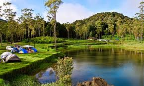
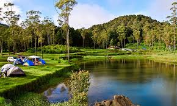

Information & Facilitiy
Selain Di kenal sebagai bumi perkemahan dan penangkaran rusa, kampung cai rancaupas ciwidey memiliki beberapa wahana fasilitas menarik seperti outbond, flyingfox, swing stairs, paintball, adventure games dan banyak lainya. tidak lupa di penangkaran rusa sering juga digunakan untuk foto prawedding karna memiliki nuansa yang berbeda.
 
